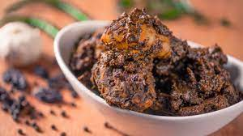

html
Ambulthiyal(Sri Lankan Sour Fish Curry)
Ambulthiyal(Sri Lankan Sour Fish Curry)

Ingredients
- 500g of firm fish(kelewella, balaya,talapath would be ideal)
- 5 pieces of goraka, soaked for 5 minutes and then pounded to form a fine paste
- 3 tablespoons of good quality black pepper
- 1 tablespoon of minced/grated ginger
- 4 garlic cloves minced/grated
- 3 cardamom pods slightly bruised
- 2-inch pandan leaves
- A sprig of curry leaves(5-8 leaves)
- 3 cloves
- 1 teaspoon chilli powder
- 1/4 teaspoon turmeric powder
- Salt to season
- Water as needed(just enough to cover the fish)
Recipe
- 01. Cut the fish(500g)into the required size, they should fit the pan while not crowding within the pan.
- 02. Soak the goraka(5) pieces in water for 5 minutes before grinding them into a fine paste.
- 03. Grind and make a paste using garlic(4 cloves), ginger(1tbs), pepper(3tbs), cloves(3), curry leaves(a sprig), pandan leaves(2inch), cardamom(3), red chilli powder(1tsp), turmeric(1/4tsp).
- 04. Make a paste with garlic (4 cloves), ginger (1 tablespoon), pepper (3 tablespoons), cloves (3), curry leaves (a sprig), pandan leaves (2 inches), cardamom (3), red chili powder (1 tablespoon), and turmeric (1/4 teaspoon).
- 05. Combine both pastes, taste for seasoning, and season with salt and pepper as needed.
- 06. Mix the spice paste with the fish pieces in a large mixing bowl.
- 07. Set aside for 10-15 minutes while you prepare the clay pot in which the fish will be cooked.
- 08. Cut the banana leaf into rectangular or disk-shaped pieces so that you can layer the bottom of the clay pot.
- 09. Once the banana leaf is in the bottom of the pan, give the fish one last mix before adding them to the clay pot.
- 10. Avoid crowding the fish or stacking them one on top of the other because you want all of the pieces of fish to cook evenly and intact.
- 11. If there is any leftover marinade in the bowl, add 1 cup of water, collect the marinade, and pour it over the fish.
- 12. Check to see if the water just covers the fish; if not, add a little more.
- 13. Place the pan over a low heat and allow it to simmer until the water has completely evaporated.
- 14. At no point during the cooking process, mix or use a spoon on the dish; if you must move the pieces, hold the pan from both sides and give it a gentle shake to allow the fish to settle.
- 15. Remove the fish from the fire once it has a blackish tinge and is slightly charred on the bottom. Then, gently pry the fish pieces apart so they can easily come off the pan.